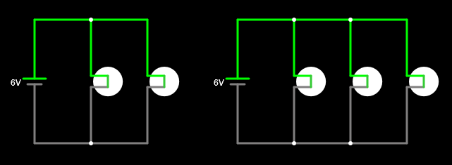

3. Connexió en paral·lel¶
Dos components es connecten en paral·lel si els seus dos terminals estan connectats entre si, formant dues branques.
La connexió paral·lela té la propietat de mantenir la mateixa tensió en tots els seus components. Aquests també són independents. Si retirem un dels components en paral·lel, els altres components continuaran funcionant igual que abans.
Generadors paral·lels¶
Els generadors paral·lels afegeixen els seus corrents per poder lliurar -los més comuns que un.
Les bateries i les bateries no solen estar connectades en paral·lel perquè amb prou feines proporciona avantatges i poden presentar problemes si les bateries no són exactament idèntiques, quan es descarreguen les unes de les altres. Per aconseguir més corrent, s’utilitzen bateries o bateries més grans, en lloc d’utilitzar bateries paral·leles.
Els generadors de les plantes elèctriques es connecten en paral·lel per poder generar molt més corrent elèctric del que podria lliurar un sol generador. Aquesta connexió és força delicada perquè tots els generadors han de tenir la mateixa tensió i treballar a l’uníson. En cas contrari, hi haurà variacions en la xarxa elèctrica que podria acabar en una apagada elèctrica.
Receptors paral·lels¶
Els receptors solen connectar -se en paral·lel per treballar independentment els uns dels altres. Així, les diferents bombetes d’una làmpada es connectaran en paral·lel de manera que si un d’ells es fon o s’elimina, les altres bombetes continuaran funcionant per igual.
Simula al simulador en línia els circuits següents amb làmpades paral·leles per veure com afecta la tensió de cada làmpada:

Nota
Els cables en una connexió paral·lela s’han de dibuixar a poc a poc unint a cadascun dels punts de connexió:


Si ara desconnectem una de les làmpades en paral·lel, podem comprovar com continua la resta del circuit:

Exercicis¶
- ¿Qué es un circuito en paralelo?
- Quines propietats té la connexió en paral·lel?
- És comú connectar les bateries en paral·lel? Expliqueu la resposta.
- Per què es connecten els generadors de centrals paral·leles?
- Dibuixa tres bombetes connectades en paral·lel a una bateria.
- Què passa si una làmpada es fon en paral·lel amb altres làmpades?